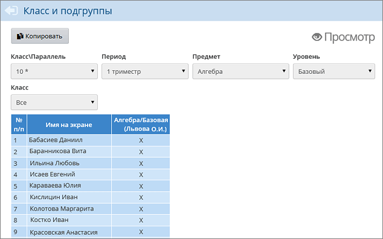

После объединения ПГ, нужно открыть экран Обучение -> Подгруппы и выбрать нужную параллель (в нашем примере 10*):

Нужно убедиться, что после объединения ПГ учащиеся оказались зачислены в корректные ПГ (в нашем примере по предмету «Алгебра»).
Символы «X» означают, что ученик зачислен в группу по данному предмету. Если в последнем фильтре Класс выбрать конкретный класс (например, 10а), то появится возможность указать другую группу ученикам выбранного класса.
После того как скорректированы списки учащихся в группах, нужно убедиться, что в каждой новой ПГ сохранилась информация из объединённых ПГ:
·
расписание,
·
посещаемость,
·
все сведения об успеваемости (задания, текущие и итоговые оценки).